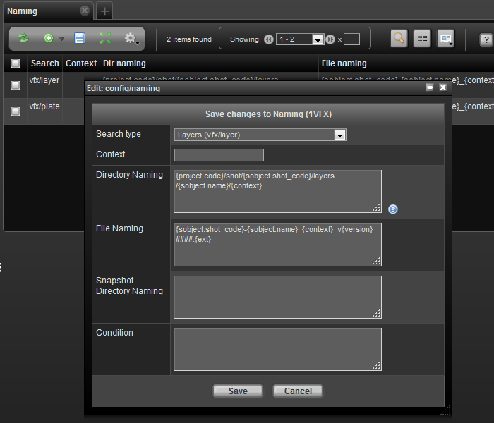

Project Automation - File Naming

The naming page provides a way of controlling directory and file naming conventions through a simple expression language . Each naming entry can contain a directory naming and/or file naming. It is designed that so that a relatively non-technical user can create custom naming conventions for various sTypes.
The relative path expression language is a simple language, but in order to understand it you must know the basic components that generally make up a naming convention. The expression language allows access to almost any data in TACTIC. The keywords which are the most relevant in naming conventions are as follows:
parent: |
The parent sObject to the current sObject defined by the search type attribute |
sObject: |
The actual sObject which is being referenced |
snapshot: |
The child snapshot generated or being referenced for the naming convention. This contains the context and version information. |
file: |
The file object pertinent to the check-in. This allows for reference to the original file name or extension. |
login: |
The user who is carrying out the check-in or check-out. |
user: |
The user who is carrying out the check-in or check-out. |
The properties of these Search Objects are used to build up the naming convention.
A simple example of a relative path is as follows:
{project.code}/sequence/{parent.code}/{sobject.code}/{snapshot.context}/mayawhich after translation could be translated into:
sample3d/sequence/XG/XG001/model/mayaThis expression is explicit in that every variable scopes the object that the attribute comes from.
Another example is for a file name:
{sobject.code}_{snapshot.context}_v{snapshot.version}.{ext}This can be translated into: chr001_model_v001.ma upon expansion.
The @GET(sobejct.code) or @GET(sobject.sthpw/snapshot.version) TACTIC expression language syntax can be used instead; however, the original keyword approach is more readable. In case you do decide to use the TEL syntax, here are the equivalents:
{basefile} = {$BASEFILE}
{ext} = {$EXT}
{project.code} = {$PROJECT}
{login} = {$LOGIN}
It is important to note that you can’t fix TEL syntax with the keyword syntax in the same field of a naming entry.
3.0 Defaults
TACTIC will fall back on the default convention which would be represented by the following expression. These defaults are slightly different from previous versions:
{project.code}/{search_type}/{sobject.code}/{context} {file.name}_{context}_v{version}.{ext}Checking in the file characterFile.ma would create the following file and directory structure:
sample3d/characters/chr001/publish/characterFile_v001.maAssumptions
Various assumptions have been made about which attributes are attached to which SObjects. It is often the case that the context is composed of a number of parts that are of interest to a naming convention.
For example, it is conceivable to have a context named: "model/hi". However, you may wish to break this up in a specific way in your naming convention. This is accomplished using [] notation common to many programming languages.
The following notation could be used for a directory using this: which could be translated into
{code}/{context[0]}/maya/{context[1]} chr001/model/maya/hiTo insert a naming convention expression, load a Naming view and click the Insert button to insert a new set of expressions.
A Naming Convention sObject has specific properties which are used to either define the convention or act as conditions to define if the convention should be used for the given checkin. When Inserting, fill in the following options:
Search Type |
The search_type to associate the naming convention to. |
Snapshot Type |
The snapshot type of the checkin to use as a condition (default for most TACTIC check-ins is file. Default for directory checkin using the General Checkin Widget is dir. Since this is a more advanced attribute, it is hidden by default) |
Context |
The snapshot context of the checkin to use as a condition (default checkin when there is no pipeline is publish) |
Dir Naming |
The expression entry for the directory naming convention |
File Naming |
The expression entry for the file naming convention |
Sandbox Dir Naming |
The expression entry for the user sandbox directory naming convention |
Latest versionless |
If set to true(checked), every time a check-in is created, a latest version of the main file will be created as well. If you want to always have a file that refers to the latest version of a model you can use this feature by calling it {sobject.code}_{context}_latest.{ext}. The latest version exists as copy by default. To make it a symlink, set the project setting versionless_mode to symlink. Note: If this is checked, you need to have an entry in the naming table just for this versionless case in addition to the usual one for regular check-ins. |
Current versionless |
If set to true(checked), every time a check-in is created, a current version of the main file will be created as well. If you want to always have a file that refers to the latest version of a model you can use this feature by calling it {sobject.code}_{context}_latest.{ext}. The latest version exists as copy by default. To make it a symlink, set the project setting versionless_mode to symlink. Note: If this is checked, you need to have an entry in the naming table just for this versionless case in addition to the usual one for regular check-ins. |
Manual version |
If set to true(checked), the incoming file name can dictate what the version of the checked-in snapshot appears as. For intance, if the incoming file name is dessert_v005.jpg, the version will appear as version 5. Another example is sun_V0030.0010.jpg. The version will appear as version 30. It tries to recognize the number immediately after the v or V in the file name. Zero or negative numbers are ignored. If such a version already exists, the check-in will throw an error |
Condition |
It can be set up so that differnet naming is adopted based on a particular attribute of the sObject. For instance, for the sType prod/asset, one can assign 2 naming entries. The default naming where the condition is left blank is adopted in most circumstance. The second special naming is adopted when the category attribute equals vehicle by using this expression @GET(.category) ==vehicle. |
Example A
In the following example, the file is being checked in withe general publish context
File: characterFile.ma
Checkin Context: publish
Desired output: sample3d/characters/character001/character001_publish_v001.ma:
{project.code}/{parent.title}/{sobject.code} {sobject.code}_{snapshot.context}_v{snapshot.version}.{ext}Example B
In the following example, the shot RC_001_001 is part of the parent sequence RC_001 and is checked in with an animation context. This will also use the short hand expressions
File: shotFile.ma
Checkin context: animation
*Desired output:*sample3d/shot/RC_001/RC_001_001/scenes/RC_001_001_animation_v001.ma
{project.code}/shot/{parent.code}/{sobject.code}/scenes {sobject.code}_{snapshot.context}_v{snapshot.version}.{ext}Example C
In the following example, the desired file location is at the project folder level to accommodate a cross-project library of files.
File: artFile.png
Checkin context: publish
Desired output: general/art001/art001_publish_v001.png
general/{sobject.code} {sobject.code}_{snapshot.context}_v(snapshot.version}.{ext}Example D
In the following example, a context and subcontext are used for checking in to a final process for an art asset
File: artFileFinal.psd
Checkin context/subcontext: final/colourA
Desired Output: finals/art001/final/photoshop/colourA/art001_final_colourA_v001.psd
finals/{sobject.code}/{snapshot.context[0]}/photoshop/{snapshot.context[1]} {sobject.code}_{snapshot.context[0]}_{snapshot.context[1]}_v{snapshot.version}.{ext}Example E
In the following example, the shot RC_001_001 is part of the parent sequence RC_001 and is checked in with an animation context. Also when a user checks out the sandbox, files should be organized into a user folder.
File: shotFile.ma
Checkin context: animation
Desired Repo output: sample3d/shot/RC_001/RC_001_001/scenes/RC_001_001_animation_v001.ma
Desired Sandbox output: sample3d/albert/shot/RC_001/RC_001_001/scenes/RC_001_001_animation_v001.ma
{project.code}/shot/{parent.code}/{sobject.code}/scenes {project.code}/{login.login}/shot/{parent.code}/{sobject.code}/scenes {sobject.code}_{snapshot.context}_v{snapshot.version}.{ext}Example F
In the following example, the shot RC_001_001 is part of the parent sequence RC_001 and is checked in with an animation context. Also when a user checks out the sandbox, files should be organized into a user folder. Since we also want to define a latest versionless, we need a second entry with the same information, and with the latest_versionless check-box checked. In this example we are putting the versionless file in the same directory, but you can put it in a different one if desired.
File: shotFile.ma
Checkin context: animation
Desired Repo output: sample3d/shot/RC_001/RC_001_001/scenes/RC_001_001_animation_v001.ma
Desired Repo latest versionless output: sample3d/shot/RC_001/RC_001_001/scenes/RC_001_001_animation_latest.ma
Desired Sandbox output: sample3d/albert/shot/RC_001/RC_001_001/scenes/RC_001_001_animation_v001.ma
Entry 1
{project.code}/shot/{parent.code}/{sobject.code}/scenes {project.code}/{login.login}/shot/{parent.code}/{sobject.code}/scenes {sobject.code}_{snapshot.context}_v{snapshot.version}.{ext}Entry 2
{project.code}/shot/{parent.code}/{sobject.code}/scenes {project.code}/{login.login}/shot/{parent.code}/{sobject.code}/scenes {sobject.code}_{snapshot.context}_latest.{ext} trueExample G
In the following example, a texture file is checked in under shot RC_001_001. Also when a user checks out the sandbox, files should be organized into a user folder. Since we also want to define a current versionless, we need a second entry with the same information, and with the current_versionless check-box checked. In this example, we are retaining the original file name
File: shotFile.ma
Checkin context: animation
Desired Repo output: sample3d/shot/RC_001/RC_001_001/texture/my_tree_texture.jpg
Desired Repo latest versionless output: sample3d/shot/RC_001/RC_001_001/texture/my_tree_texture_CURRENT.jpg
Desired Sandbox output: sample3d/albert/shot/RC_001/RC_001_001/scenes/my_tree_texture.jpg
Entry 1
{project.code}/shot/{parent.code}/{sobject.code}/textures {project.code}/{login.login}/shot/{parent.code}/{sobject.code}/textures {basefile}.{ext}Entry 2
{project.code}/shot/{parent.code}/{sobject.code}/textures {project.code}/{login.login}/shot/{parent.code}/{sobject.code}/textures {basefile}_CURRENT.{ext} trueExample H
In the following example, asset file name is made up of asset_code, context, and version by default. If the asset’s category is 2D , we will add this category as a suffix to the name
File: my_chr001.jpg
Checkin context: model
Desired Repo output: sample3d/asset/chr001/chr001_model_v001.jpg
Second Desired Repo output: sample3d/asset/chr003/chr003_model_v001_2D.jpg
Desired Sandbox output: sample3d/dan/asset/chr001/my_chr001.jpg
Entry 1
{project.code}/asset/{sobject.code} {project.code}/{login.login}/asset/{sobject.code} {sobject.code}_{context}_{version}.{ext}Entry 2
{project.code}/asset/{sobject.code} {project.code}/{login.login}/asset/{sobject.code} {sobject.code}_{context}_{version}_{sobject.category}.{ext} @GET(.category)=='2D'Example I
In the following example, the Checkin Type is set to be (auto), to use the filename as the subcontext.
The checkin type "(main)", uses the process as context.
The checkin type "(strict)" could also be available as a checkin type.
File: shotFile.ma
Checkin context: design/shotFile.ma
*Desired Repo output:*finals/art001/photoshop/design/shotFile.ma
finals/{sobject.code}/photoshop/{snapshot.context} (auto) {sobject.code}_{snapshot.context}_v{snapshot.version}.{ext}Example J - keywords: snapshot and file
The following is an example of the proper way to use the special keywords snapshot and file in an expression to retrieve the snapshot and file object for a checkin:
{@GET(snapshot.context)}{@GET(file.type)}Notice that the syntax for these particular expressions deviates from the syntax of typical TACTIC expressions.
In the example below, {$PROJECT} is used to replace {project.code}.
Below is an example using these expressions of a file being checked in with the general publish context:
File: source_art_v0001.jpg
Checkin Context: publish
Desired output: sample3d/chr/chr001/publish
{$PROJECT}/chr/{@GET(.code)}/{@GET(snapshot.context)} source_art_v{@GET(snapshot.context).version,%04.d}.{@GET(file.type)}Example K - Combination of TACTIC expression language syntax and the original keyword approach
The following is an example of directory naming using the TACTIC expression language syntax and the original keyword approach. It will also use expression language syntax to specify the condition.
{@GET(snapshot.process)}{@GET(file.name)}Notice that the syntax for these particular expressions deviates from the syntax of typical TACTIC expressions.
In the example below, the keyword approach {project.code}, can be used with expression language {@GET(.code)}.
Below is an example using these expressions of a file being checked in with the process finish, the Condition entry defines a specific category called 2D and the Context entry will only allow you to check in the files that have the process design:
File: source_art_v001.jpg
Checkin Context: design
Desired output: sample3d/chr001/design
{project.code}/{@GET(.code)}/{@GET(snapshot.process)} Design/* {project.code}/{login.login}/asset/{sobject.code} {@GET(file.name).version,%03.d}.{@GET(file.type)} @GET(.category)=='2D'